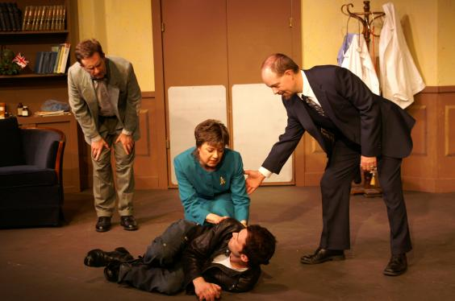

No Carol News Here
Hi all, This post does not involve Carol at all, (except for the fact that none of the following would be happening if not for Carol), but I thought I would post a little somewhat unrelated news. Since we worked…
3 commentsRory's First Kiss Casting Notice
Hello RFK/Bat Fans! Rumor has it that the extra casting company for Rory's First Kiss has changed. The new casting company can be found at http://rfkcasting.com. They are accepting applications for extras, either by…
Witless Protection
Greetings Fans! Carol adds another movie to her body of work, as she is working on an "elegant party scene" for Witless Protection, shooting in Vernon Hills tonight. WP's cast includes Peter Stormare, who you may recall…
1 commentNo Spoilers Here
Carol is just starting her third and last day (knight) of filming for Rory's First Kiss. Her call time each day has been at 4:00pm, and they have been working through to 5:00 or 6:00am. Unfortunately, the extreme…
Rory's First Kiss Update
Hello Fans, Carol's scene in Rory's First Kiss shoots this weekend. Different from most other background work Carol has done, RFK required a wardrobe session to verify the outfit that Carol will be wearing. After the…
This Film Has Not Yet Been Named
Just a quick update... this week Carol is rehearsing and shooting a part in a small independent/student film at Columbia College. The film has not yet been named, but is sure to be a sleeper hit at Cannes and Sundance.…

The Return of Hilo Hattie
Hello Fans! As previously reported, this week, Carol was working at a house in Barrington, for a scene in The Return. Unfortunately, the weather was somewhat uncooperative, so although the scene in the movie is supposed…

It Ran In The Family
It Runs In The Family has run its course. Thanks to all of Carol's fans who were able to make the trek out to DeKalb to enjoy the show! And for those of you that weren't able, you'll have another chance for Carol's next…
1 comment
Neela!!!
If you watched ER's season finale, it was quite a shocker! Once again, Carol's (brief) appearance was in the final scene of the episode, at 42:34, for about 4 seconds. Carol was visible just before the explosion when…
The Return
On Tuesday, Carol spent the day at a church in south Naperville working on a scene for The Return, with Tim Robbins. It was a long day, but Carol reported that Tim entertained the crew and background actors between…